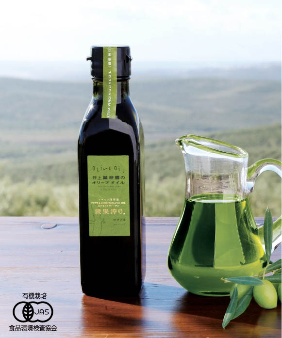
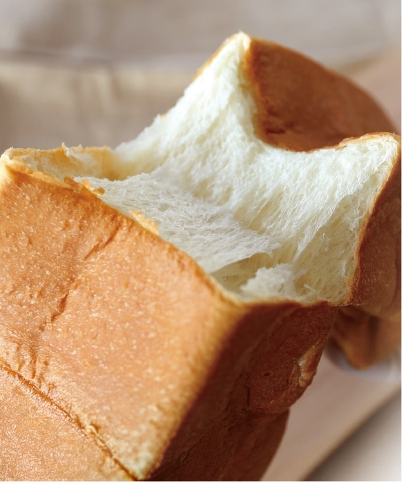
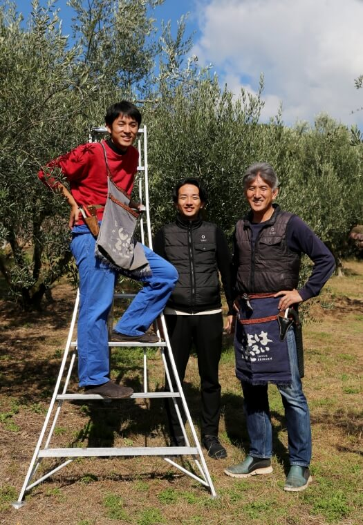

知らなかった朝に、もう戻れない。 — 緑果オリーブオイル × 菊太郎生食パン
市販のパンに試したとき、なるほど、と思った。
美味しかった。それは本当のことです。
でも菊太郎の生食パンと合わせたとき、なんか、違った。
浸す、という動詞を、
食べ物に使う日が来るとは思っていなかった。
パンの断面をオイルの海に沈めると、
若草色の油が、白い生地の奥まで静かにゆっくりと染み入っていく。
オイルの清々しさが消えない。
小麦の甘みも、消えない。
どちらも、そこに、ちゃんといる。
市販のパンでは、この染み方をしない。
菊太郎の、あの密度と甘みでなければ、
オイルはただ「かかる」だけで終わってしまう。
ちょっと高いな、と思う。
でも、知ってしまったら仕方ない。
それがこの組み合わせの、少し困った真実です。
ギリシャやスペインでは、秋の収穫が終わると家族が集まって、その年に搾れたばかりのオイルをパンに浸して食べる、という文化があるそうです。大げさでなく、それが一番のごちそうだったらしい。
搾りたての緑のオイルを「液体の金」と呼ぶ人たちが、パンと組み合わせてきたのには、ちゃんと理由があった。
一年かけて育てたものを、
パンに浸して、家族と食べる。
それだけのことが、どうしてこんなに豊かなのか。
小豆島に来て、少しわかった気がした。
その食べ方が、今、小豆島から届けられる。

普通のオリーブオイルは、完熟した黒い実から搾る。緑果オリーブオイルは、まだ青いうちに収穫した実だけを使う。収穫できるのは、一年のうちわずか数週間だけ。
喉の奥に感じる、あの清々しさ。少し辛くて、でもすっきりする。他のオイルで同じことをしようとしても、たぶん、こうはならない。
「もったいない」と思うくらい浸してください。
それが、たぶん正しい食べ方です。

湯種という製法がある。小麦粉を熱湯で一度糊化させてから生地に混ぜる。難しい話は置いておくと、要するに、もちもちしていて、かむほど甘い。
この生地にオイルを浸すと、弾かない。でも溺れない。ちょうどいいところで受け取って、ちょうどいいところで返してくれる。そういうパンです。
市販のパンでも美味しい。
でも菊太郎で浸したとき、なんか、違った。
うまく説明できないけど、違った。
薄いと、オイルに負けてしまう。
厚みが、ちゃんと甘みを守ってくれる。
そこが大事。
小皿に、緑の池をつくる。
急がなくていい。
オイルが、パンに入っていくのを感じる。
おいしいって、たぶん、こういうことだ。

1940年に創業し、小豆島で柑橘やオリーブを育ててきた。派手な広告より、いいものをつくることに時間をかけてきた会社です。
グループの菊太郎も、同じ考え方でパンをつくっている。そういう人たちがつくったものだから、浸すだけで、こんなに美味しい。
「農は国の基なり」
難しい言葉だけど、要するに、
ちゃんとしたものをつくり続けよう、ということだと思っています。
— 井上誠耕園 代表
緑果オリーブオイルと、菊太郎の生食パン。
この組み合わせを、まだ知らない朝がある。
市販のパンでも美味しかった。
でも菊太郎で浸した朝を知ったら、
普通の朝に、少し物足りなさを感じるようになりました。
それが、少し困った真実です。